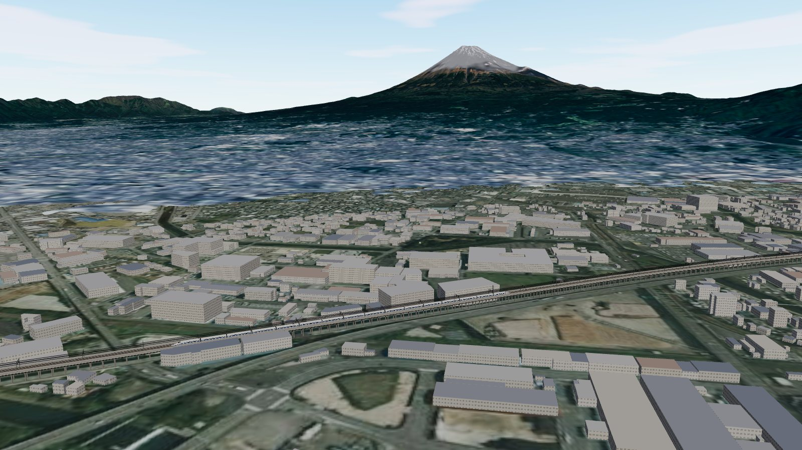

01
窓いっぱいの富士山
客室の窓から真横を見た視点です。富士山までの距離・方角・仰角をいつも表示します。冠雪は尾根や沢の陰影を残して描き、オン/オフも切り替えられます。

HIGHLIGHTS
下りでは右の窓、上りでは左の窓に富士山が見えます。富士川を渡る鉄橋、新富士駅のホームなど、実際の車窓で知られる場面を走ります。
客室の窓から真横を見た視点です。富士山までの距離・方角・仰角をいつも表示します。冠雪は尾根や沢の陰影を残して描き、オン/オフも切り替えられます。
こだまは副本線に入り、分岐器を70 km/hで通過して、ホームの定位置にぴたりと止まります。停車中も窓の外には富士山。新富士と三島は2面4線のホーム・上屋・駅名標まで作り込みました。
線路は OpenStreetMap の複線の中心線から作り、全線を高架橋で再現しました。富士川は鋼桁と楕円形の橋脚で渡ります。架線柱、架線、バラスト、レールも1本ずつ通しています。
富士山、宝永山、愛鷹山、箱根、南アルプスなど15の山頂に標高つきのラベルを付けました。駅・市役所・工場など30か所の建物にも名前を表示します。陰に隠れたラベルは消え、重なるときは自動で位置をずらします。
時間帯は朝・昼・夕方の3つです。夕方は富士山が茜色に染まり、街に長い影が伸びます。遠くの山ほど大気でかすむように描いています。
5 VIEWS
視点はVキーか1〜5のキーで切り替えます。ドラッグで見回し、ホイールでズームできます。
DRIVING
ATCの285 km/hと減速パターンに従って走ります。景色を眺めるだけで、終点のトンネルまで運んでくれます。
↑↓キーで目標速度だけを変えます。285 km/hを超えるとATCが「解除」になり、最高1000 km/hで景色が流れます。
のぞみは全駅通過、こだまは新富士と三島に停車します。下り（新大阪方面）では右窓、上り（東京方面）では左窓に富士山が見えます。
時間の進み方を×1〜×5に切り替えられます。停車時間も一緒に縮みます。
REAL DATA
SPECS
FAQ
下り（新大阪方面）では右の窓（E席側）、上り（東京方面）では左の窓に見えます。タイトル画面で方向を選ぶと、見える側の窓が自動で選ばれます。
富士川西岸のトンネル坑口から、新富士駅・三島駅を経て三島の東のトンネル坑口までの約30.3 kmです。
はい。地形・航空写真・建物のデータはすべてアプリに入っているので、インターネット接続なしで動きます。
macOS では右クリック →「開く」を選んでください。Windows では SmartScreen の「詳細情報」→「実行」で起動できます。
はい。Lキーやボタンで、画面の表示・駅名・ラベルを日本語と英語で切り替えられます。
地形・建物・線路の位置は実データに基づいています。一方、高架の高さ、車両の形、駅の構造は実物をもとにした再現で、細部は異なります。